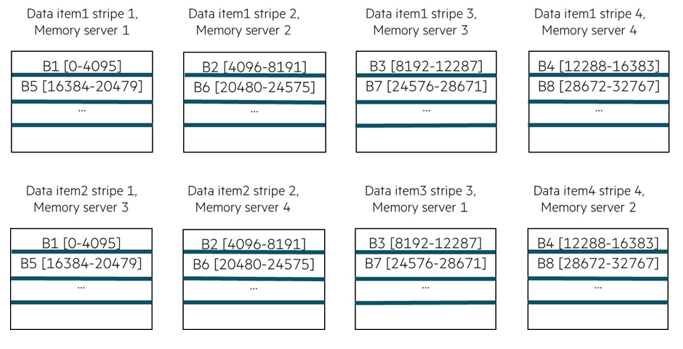

Data Item Interleaving
In earlier implementation of OpenFAM, the region created by a user could span across more than one memory server. However memory for any given data item was allocated only on a single memory server. Hence the region spanning feature was not being effectively utilized.For single-program, multiple-data (SPMD) applications, data items are typically large, and multiple PEs concurrently access different parts of the data item. For such data items, the network interface at the memory server becomes a bottleneck. During benchmark runs, it was observed that random access benchmarks caused network bottlenecks and in-cast at the memory servers. In OpenFAM 3.0 implementation, the concept of data-item interleaving is introduced to improve scalability. Data interleaving refers to interspersing portions of the data across the memory servers in some specified order or other arrangement. As an example, consider an arrangement with 4 memory servers (memory servers 1 to 4) as shown in Figure 1.
Figure 2 illustrates the concept of interleaving using the interleaving size to be 4096. With interleaving size of 4KiB, the interleaving logic places data portion 0 at memory server 1, places data portion 1 at memory server 2, places data portion 2 at memory server 3, places data portion 3 at memory server 4, places data portion 4 at memory server 1, places data portion 5 at memory server 2, places data portion 6 at memory server 3, and so forth. Such an interleaving arrangement can be referred to as a round robin interleaving arrangement in which sequential data portions are successively placed in memory servers according to an order of the memory servers (starting at a beginning memory server and proceeding to a last memory server in a sequence), and when the last memory server is reached in the sequence, the next data portion is placed in the beginning memory server in the sequence and the process continues until the end of the data portions is reached. Placing a data portion at a given memory server refers to writing the data portion in the main memory of the memory server.
Note:Our performance benchmark runs indicate that 64KiB is an interleaving size that offers better throughput and latency results for the data sets of different sizes.